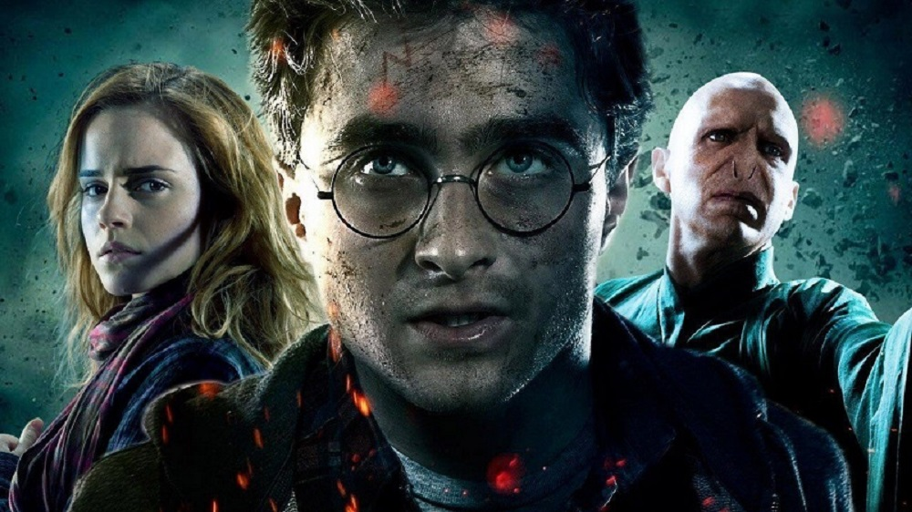

Harry Potter
J.K.RollingHarry Potter is a series of seven fantasy novels written by British author J. K. Rowling. The novels chronicle the lives of a young wizard, Harry Potter, and his friends, Hermione Granger and Ron Weasley, all of whom are students at Hogwarts School of Witchcraft and Wizardry. The main story arc concerns Harry's conflict with Lord Voldemort, a dark wizard who intends to become immortal, overthrow the wizard governing body known as the Ministry of Magic, and subjugate all wizards and Muggles (non-magical people). The series was originally published in English by Bloomsbury in the United Kingdom and Scholastic Press in the United States. A series of many genres, including fantasy, drama, coming-of-age fiction, and the British school story (which includes elements of mystery, thriller, adventure, horror, and romance), the world of Harry Potter explores numerous themes and includes many cultural meanings and references.[1] Major themes in the series include prejudice, corruption, madness, and death.
Harry Potter
The success of the books and films has allowed the Harry Potter franchise to expand with numerous derivative works, a travelling exhibition that premiered in Chicago in 2009, a studio tour in London that opened in 2012, a digital platform on which J. K. Rowling updates the series with new information and insight, and a trilogy of spin-off films premiering in November 2016 with Fantastic Beasts and Where to Find Them, among many other developments. Themed attractions, collectively known as The Wizarding World of Harry Potter, have been built at several Universal Destinations & Experiences amusement parks around the world.